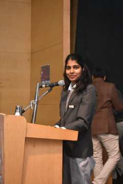

01
Curriculum Mapping & Unit Planning
Organising units, identifying essential concepts, estimating teaching time and sequencing learning so that knowledge and skills build progressively across a term.
I make science feel alive—through curiosity-led questions, hands-on exploration, thoughtful curriculum design and learning experiences that help students connect ideas to the world around them.

I am a science educator at Pramiti School, Bengaluru, teaching Biology and Chemistry across Grades 6–8 and Environmental Science in Grade 9. I design lessons that invite learners to observe, question, test, explain and reflect—not just memorise.
My postgraduate training in Microbiology gives me a strong scientific foundation, while my earlier experience in Learning & Development strengthened my facilitation, communication and learning-design skills. I enjoy bringing these threads together in accessible, engaging classroom experiences.
My work spans curriculum mapping, lesson planning, assessment design, practical science, visual learning resources and student-centred activities. Outside the classroom, sport and a small ginger-ale venture keep me curious about teamwork, discipline and experimentation.
Explore detailed lesson plans, assessment samples, curriculum frameworks, science resources and wider initiatives on the dedicated project portfolio page.
Organising units, identifying essential concepts, estimating teaching time and sequencing learning so that knowledge and skills build progressively across a term.
Designing interactive lessons in Biology, Chemistry and Environmental Science with clear learning intentions, investigations, collaborative tasks and reflection.
Creating topic-based worksheets, structured questions, practical prompts and higher-order thinking questions that check understanding and extend reasoning.
Developing visual prompts, placards, classification tasks, food-chain activities and image-led comparisons to make abstract science concepts easier to discuss.
Contributing to brainstorming, graph-making and discussion points around education in an AI-shaped world, with an emphasis on thoughtful use of technology in learning.
Supporting a welcoming classroom environment through clear classroom rules and dedicated reading, calm, nature and creative corners that encourage learner ownership.
Building student activities around habitats, food chains, adaptations and comparisons between organisms using evidence from images, charts and observations.
Creating scaffolded practice in chemical equations, reaction products, balancing equations, mole concepts and analytical chemistry for school-level learners.
A small venture exploring ginger-ale fermentation and a targeted audience. It brings together curiosity, product thinking and the practical challenges of building an idea.
Portfolio note: the cards describe projects and recurring work areas based on my teaching and initiative experience. They do not imply that student data, confidential school documents or unpublished classroom materials are shared publicly.
Teach Biology and Chemistry for Grades 6–8 and Environmental Science for Grade 9, including IGCSE-aligned learning. Plan lessons, develop assessments and classroom resources, and support scientific literacy through inquiry, discussion and practical activities. Contribute to curriculum planning and school sports initiatives.
Worked within the Learning & Development function, bringing a training and facilitation perspective to my later work in education.
The Oxford College of Science, Bengaluru
Fergusson College, Pune
English · Hindi · Marathi · Tamil · Kannada · Bengali
Contribute to the school sports club and sports league, helping plan and coordinate sporting events and encourage teamwork, discipline and student participation. Personal sporting interests include 100 m track and field, Kho-Kho and kickboxing.
A ginger-ale venture exploring fermentation and a focused audience—an opportunity to learn through experimentation, iteration and the process of taking an idea towards a product.
I'm happy to connect about science teaching, curriculum and assessment design, educational collaborations, or relevant teaching opportunities.